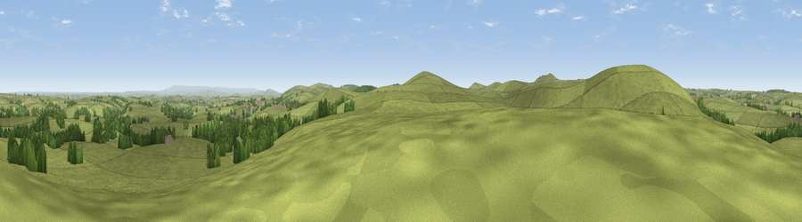

Viewpoint near Altarnun
#17062 in England · top 28% of its area beats it · near AltarnunThe view, rendered

A 360° render of this exact spot computed from the terrain model, tree cover and land cover — summer colours, afternoon light, calibrated against photographs of famous viewpoints. Real trees, hedges and buildings will differ in detail.
The panorama
Grey silhouette: terrain skyline in each direction (720 bearings, Earth curvature and refraction included). Dashed green: skyline with trees (+15 m) and buildings (+8 m) as obstacles. Blue strip: how far the ground is visible on each bearing.
Where the view opens
Wedge length = distance to the farthest visible ground on that bearing (vegetation-aware). Rings at 10, 25 and 50 km.
What fills the view
90% grassland · 9% woodland · 1% cropland ·
Angular shares of the visible panorama (visual magnitude), not map area. Landscape diversity 0.17 (0–1 Shannon).
Key numbers
More beautiful places nearby
The staircase of upgrades: each row has a higher view potential than everything closer. Driving times are estimates from straight-line distance, calibrated against real road routing — check an actual route before setting out.
| Place | Direction | Drive | Score |
|---|---|---|---|
| Bray Down | WNW · 1 km | ~4 min | 65.7 |
| Viewpoint near Five Lanes | S · 3 km | ~6 min | 69.7 |
| Brown Willy | WSW · 5 km | ~10 min | 77.3 |
| Viewpoint near Lesnewth | NW · 11 km | ~21 min | 78.1 |
| Viewpoint near Lesnewth | NW · 12 km | ~22 min | 82.6 |
| Viewpoint near Boscastle | NW · 13 km | ~24 min | 85.2 |
| Viewpoint near Lesnewth | NNW · 14 km | ~25 min | 87.7 |
| Viewpoint near Crackington Haven | NNW · 14 km | ~26 min | 88.1 |
50.60789, -4.54351 · source: screening · position refined by local search. Computed location — check access rights before visiting.